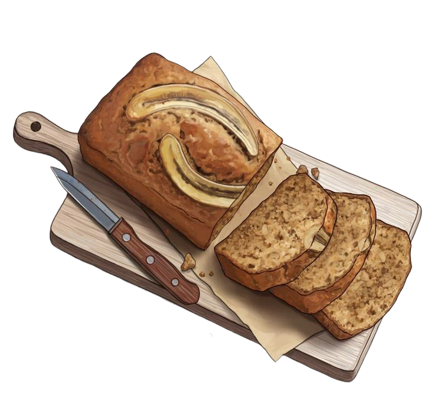

Not a fan of bananas? Try repurposing them into a sweet and moist bread. The riper they are, the better; made with ingredients that can already be found in your home.

♠ Ingredients ♠
2-3 ripe bananas
1 ½ cups all-purpose flour
⅓ cup melted butter or oil
¾ cup white sugar
1 egg
1 teaspoon vanilla extract
1 teaspoon baking soda
¼ teaspoon salt
♠ Steps ♠
Preheat oven to 350F, and while at it, grease a baking pan of your choice with some oil or butter.
In a mixing bowl, smash ripe bananas with fork until smooth.
Stir in melted butter or oil.
Add beaten egg, sugar, salt, baking soda, and vanilla extract.
Gradually add flour into batter until well-blended.
Pour batter onto greased baking pan and spread it out evenly.
Bake at 350F for 50 to 60 minutes, or until a toothpick inserted into the bread comes out clean.